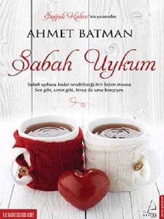

SUInsonni sabah uykusidek sevish mumkin bo'lgan go'zal tuyg'ularga boy asar.
Ushbu kitob inson hayotidagi yangi boshlanishlar, sevgi va tuyg'ular haqida hikoya qiladi. Muallif kitobxonlarni o'z hissiyotlari bilan yuzlashtirib, hayotdagi eng nozik damlarni qadrlashga undaydi. Asar o'quvchiga muhabbat va umid tuyg'ularini ulashishni maqsad qilgan.